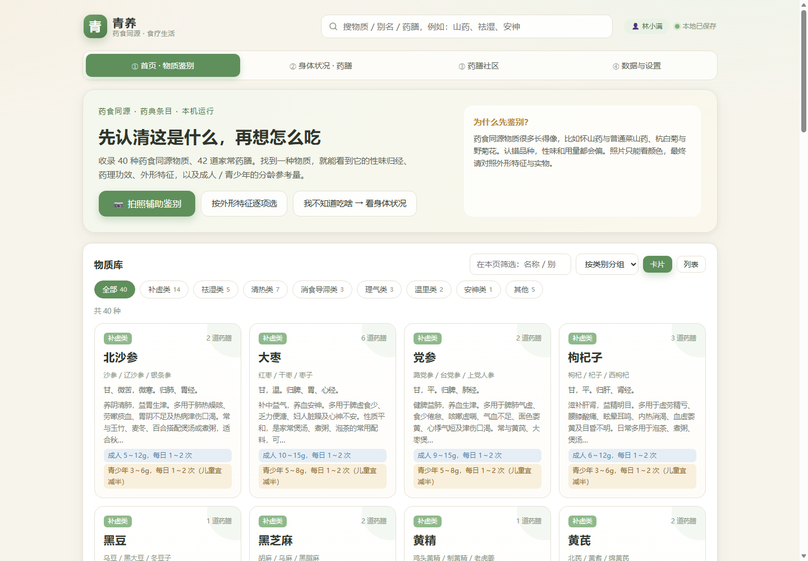
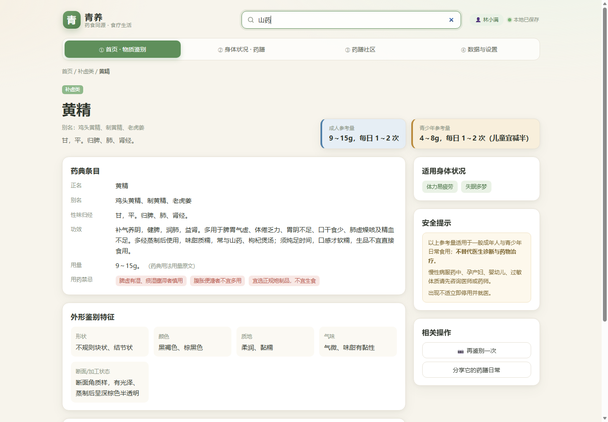
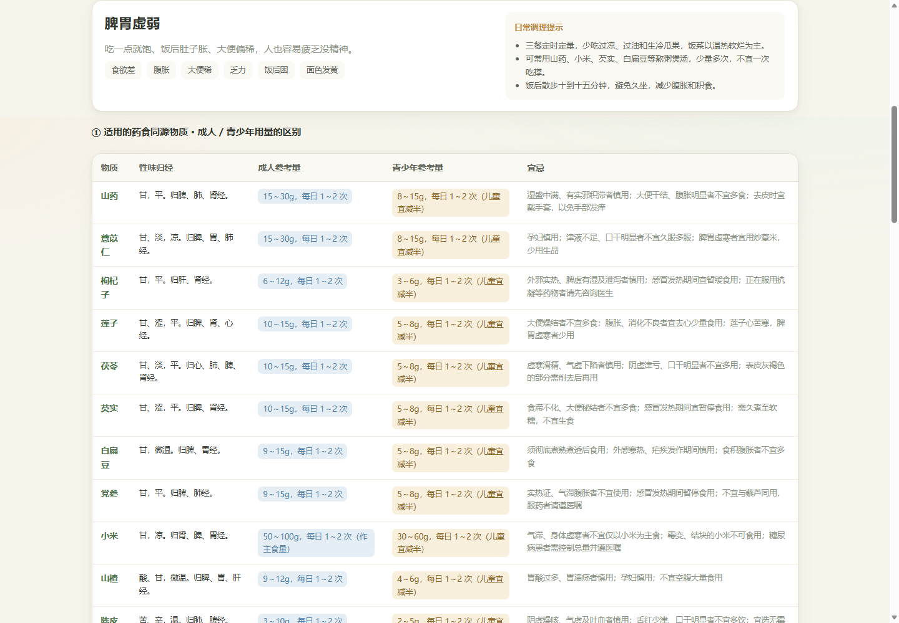
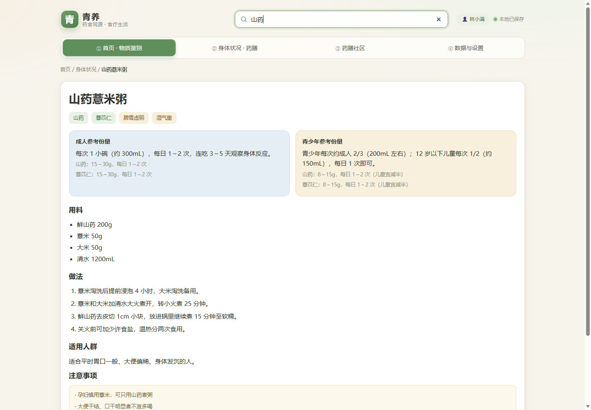
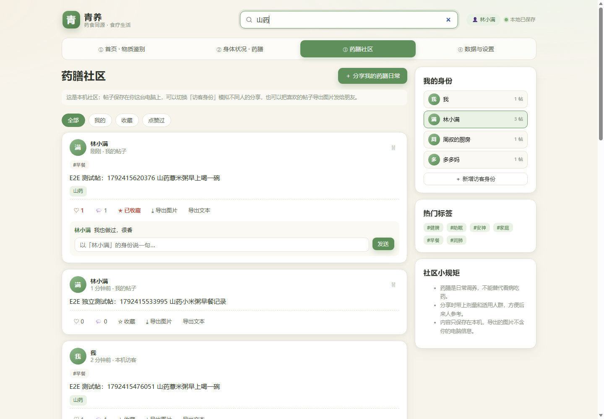
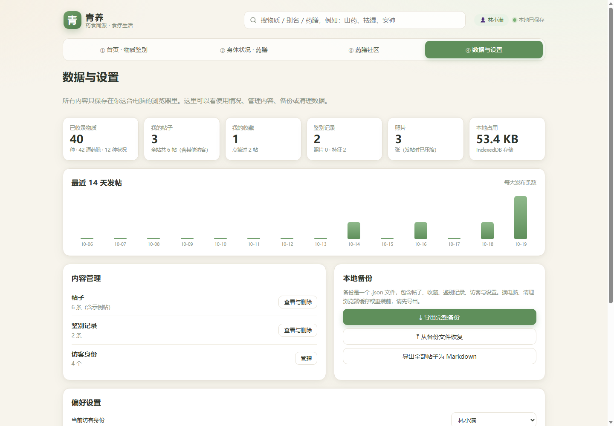

一、信息架构（站点地图）
全局顶部栏固定：品牌、全局搜索（带候选下拉）、当前访客身份。所有详情页与模态框都在同一个单页内切换，不产生新标签页。
- 顶部栏 · 品牌 + 全局搜索 + 访客身份
- ① 首页 / 物质鉴别 #/
- 物质详情页 #/substance/:id
- 药膳详情页 #/recipe/:id
- 模态：拍照鉴别 / 特征逐项选择
- ② 身体状况 → 药膳 #/conditions
- 状况详情（剂量对照表 + 药膳列表，页内展开）
- 药膳详情页（与首页共用）
- ③ 药膳社区 #/community
- 模态：发帖编辑器（文字 / 照片 / 关联药膳 / 标签）
- 帖子导出：分享图片 / 纯文本（浏览器下载）
- ④ 数据与设置 #/data
- 模态：内容管理（帖子 / 鉴别记录 / 访客）、备份预览、恢复确认、重置确认
层级不超过 2 层；任何页面之间都可以通过顶部全局搜索直达（物质 / 药膳 / 状况 / 帖子）。
二、页面结构（线框）
1. 首页 · 物质鉴别
Hero 区“先认清这是什么，再想怎么吃”＋两大鉴别入口：拍照 / 特征选择
全局搜索（顶部栏）实时候选：物质 / 药膳 / 状况 / 帖子
物质库分类筛选 chips ＋ 卡片/列表切换 ＋ 每页条数 ＋ 关键词过滤
按身体状况找物质12 种状况入口卡
本机鉴别记录最近拍照/特征鉴别，可点开

2. 物质详情页（识别终点）
标题 + 类别/性味标签名称、别名、类别
成人参考量每日份量 + 频次
青少年参考量12–18 岁，减量对照
药典条目性味归经 / 功效 / 用法
外形鉴别特征形状 / 颜色 / 质地 / 气味 / 断面
能做的药膳关联卡片
适用身体状况 + 安全提示

3. 身体状况 → 药膳
自述症状输入“用自己的话说，比如：吃一点就饱、大便稀”
12 种状况卡名称 + 一句话描述
匹配到的状况按关键词匹配高亮
剂量对照表按物质列：成人 / 青少年 分列对照
药膳列表 + 安全提示用料 / 做法 / 分龄份量

4. 药膳详情页
菜名 + 关联状况标签
成人份量建议食用量
青少年份量建议食用量
用料清单带用量
做法步骤编号步骤
适用人群 / 注意事项
分享到社区一键带关联跳转发帖

5. 药膳社区
信息流全部 / 我的 / 收藏 / 点赞过 页签
帖子卡片图文 / 关联药膳 / 标签 / 点赞 / 收藏 / 评论 / 导出
发帖按钮＋ 分享我的药膳日常
侧栏访客身份切换 / 新增、删除访客 / 社区规则

6. 数据与设置
统计卡片物质数 / 药膳数 / 帖子数 / 鉴别次数 / 访客数
14 天发帖图柱状图
内容管理帖子 / 鉴别记录 / 访客（打开管理模态）
本地备份导出 .json / 从文件恢复（预览后确认）
偏好设置主题 / 口味等，刷新保留
清空与重置危险操作，双重确认

三、关键交互流程
流程 A · 物质鉴别（三条路汇到详情页）
搜索 / 浏览输入关键词或点类别
→
物质详情剂量 / 药典 / 特征 / 药膳
→
记录在案可选：收藏、去药膳、分享
拍照调本机摄像头
→
颜色候选 Top 8取主色比对（本地算法）
→
特征确认形状/颜色/质地…补选
→
详情 + 保存鉴别记录
特征逐项选择5 个维度 chips
→
实时候选覆盖度打分排序
→
“就选第一个”确认或手动选
→
详情页
流程 B · 身体状况 → 药膳 → 分享
自述症状或直接点状况卡
→
匹配状况关键词打分
→
剂量对照表成人 / 青少年分列
→
选药膳 → 详情用料做法分龄份量
→
发帖分享自动带上关联药膳
流程 C · 社区互动与导出
发帖文字 + ≤4 图 + 关联药膳 + 标签
→
信息流浏览页签筛选 / 标签跳转
→
点赞 / 收藏 / 评论以访客身份
→
导出分享图 / 文本浏览器下载 PNG/TXT
流程 D · 数据安全（备份 / 恢复 / 重置）
导出备份qingyang-backup .json
→
（换机/清缓存前）保存文件
→
从备份恢复预览内容 → 确认覆盖
→
重置双重确认，仅清本机数据
所有流程均在本机完成，无任何网络请求；“记录”“收藏”“点赞”等操作立即落盘（IndexedDB），刷新后状态保持。
四、视觉与交互规范
配色
深绿主品牌 / 标题
主绿主按钮 / 高亮
米白底页面背景
墨绿黑正文
蓝成人剂量
琥珀青少年剂量
警示红危险操作 / 禁忌
语义约定
| 对象 | 呈现 | 说明 |
|---|---|---|
| 成人参考量 | 蓝 · 成人 | 详情页剂量卡、状况页对照表左列 |
| 青少年参考量 | 琥珀 · 青少年 | 12–18 岁；12 岁以下减半并咨询医师 |
| 安全 / 免责 | 绿 · 提示框 | 每处剂量旁固定出现“不替代医生诊断”口径 |
| 危险操作 | 红 · 删除/重置 | 删除帖子、删除访客、清空与重置 |
| 状态反馈 | toast 轻提示 | 点赞、收藏、备份、导出等即时轻反馈，不弹窗打扰 |
交互细节约定
- 每屏一个主行动按钮：首页是“拍照鉴别”，社区是“发帖”，数据页是“导出备份”。
- 危险操作双重确认：删除 / 重置必须经过确认对话框（红字按钮）。
- 空状态引导：列表为空时给出下一步行动文案，而不是空白。
- 键盘可达：全局搜索 Enter 直达；评论输入框 Enter 发送；对话框可 Esc 关闭；按钮带 type 与 aria-label。
- 即时落盘：任何写入操作后刷新不丢（IndexedDB）。
- 内容安全：所有用户输入与搜索词经转义后渲染，避免注入。
五、现状对照（已实现 / 待优化 / 建议）
| 设计项 | 状态 | 说明 |
|---|---|---|
| 四大模块各自的专属页面与功能 | 已实现 | 首页/状况/社区/数据各自独立视图与路由 |
| 全局搜索 + 候选下拉 + 直达详情 | 已实现 | 覆盖物质/药膳/状况/帖子 |
| 拍照鉴别（本地颜色分析） | 已实现 | 取主色 → 候选 Top 8，全离线 |
| 特征逐项选择 + 实时候选 | 已实现 | 5 维度 chips，覆盖度打分 |
| 分龄剂量对照（成人/青少年） | 已实现 | 物质详情、状况页、药膳页三处一致 |
| 单机社区（发帖/点赞/收藏/评论/导出） | 已实现 | 导出 PNG 分享图 / TXT |
| 备份 / 恢复 / 重置 / 偏好持久化 | 已实现 | format id: qingyang-backup v1 |
| 安全口径与转义 | 已实现 | 测试含“不替代医生诊断”等关键词检查 |
| 首页 Hero 两大鉴别入口的主次与文案 | 已落地 | 拍照鉴别为大主按钮（46px），特征选择与看状况为同尺寸次按钮 |
| 识别候选结果的“确认”动作 | 已落地 | 候选卡加「就选这个 →」按钮，拍照与特征选择两处均有明确确认入口 |
| 状况页匹配的可解释性 | 已落地 | 标签改为「你提到「症状」→ 状况」，详情页顶部显示匹配理由 |
| 帖子卡片的信息密度 | 已落地 | 关联药膳名贴作者行，正文超 4 行折叠并支持「展开全文/收起」 |
| 离线表情包 / 默认头像多样性 | 建议 | 现有 SVG 插图已可用，可再补几种茶/羹类插图 |
| “常用物质”收藏入口（首页） | 已落地 | 首页右侧“常翻的物质”：按社区收藏 + 鉴别热度取前 6，与鉴别记录并列 |
| 导出分享图份量信息 | 已落地 | 分享图在关联药膳块下方增加“成人份量 / 青少年份量”两行小字 |
| 剂量语义色一致性 | 已落地 | 蓝·成人 / 琥珀·青少年 统一：dose 标签、dose-card、dose-box 三处一致 |
| 体质自评问卷（全面版） | 超出 v1 | 已明确不在第一版范围，保持“自述症状”方式 |
六、本轮设计调整建议（可执行清单）
- ✓ 已落地 首页 Hero 主次：把“拍照鉴别”做成大按钮（第一行动），特征选择做成同尺寸次按钮并排。
- ✓ 已落地 识别候选确认：候选卡片右下角加“就选这个 →”按钮；顶部提示“照片只参考颜色，请按特征核对实物”。
- ✓ 已落地 状况匹配理由：命中后显示“你提到…所以推荐…”小标签，增加可信度。
- ✓ 已落地 帖子卡片：正文最长显示约 4 行（带“展开全文/收起”），关联药膳名以标签形式贴在作者行。
- ✓ 已落地 首页“常用物质”栏：按社区收藏 + 鉴别热度取前 6 个物质，与“鉴别记录”并列。
- ✓ 已落地 导出分享图版式：加入“成人/青少年份量”两行小字。
- ✓ 已落地 一致性：dose 标签、dose-card、dose-box 统一“蓝·成人 / 琥珀·青少年”语义色。
以上全部在本机、零依赖范围内落地，不涉及网络、云、模型。改动后已通过数据自测（511 项）与浏览器端到端回归（49 项）。